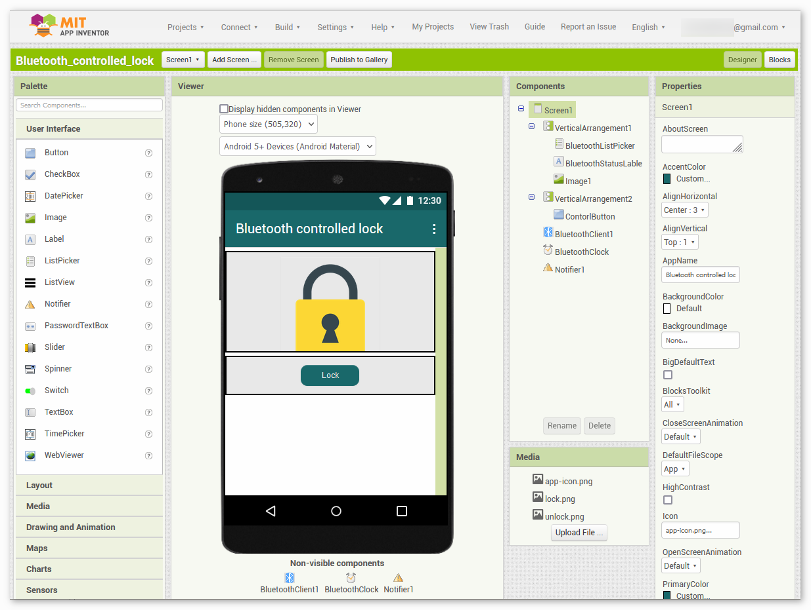
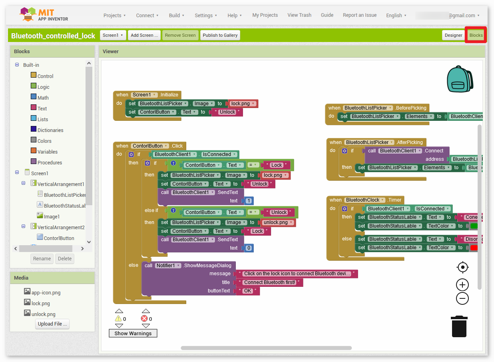
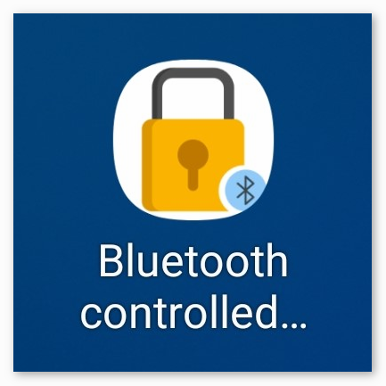
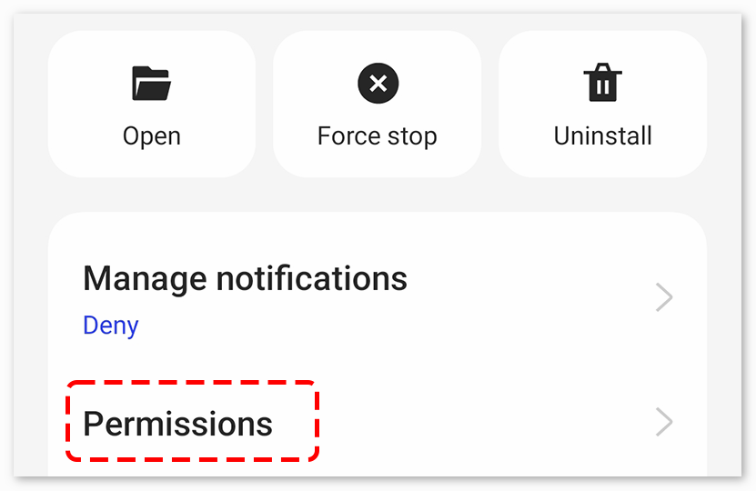

注釈
こんにちは、SunFounderのRaspberry Pi & Arduino & ESP32愛好家コミュニティへようこそ！Facebook上でRaspberry Pi、Arduino、ESP32についてもっと深く掘り下げ、他の愛好家と交流しましょう。
参加する理由は？
エキスパートサポート：コミュニティやチームの助けを借りて、販売後の問題や技術的な課題を解決します。
学び＆共有：ヒントやチュートリアルを交換してスキルを向上させましょう。
独占的なプレビュー：新製品の発表や先行プレビューに早期アクセスしましょう。
特別割引：最新製品の独占割引をお楽しみください。
祭りのプロモーションとギフト：ギフトや祝日のプロモーションに参加しましょう。
👉 私たちと一緒に探索し、創造する準備はできていますか？[ここ]をクリックして今すぐ参加しましょう！
Bluetooth 錠前コントローラー
このプロジェクトは、MIT App Inventorで作成されたAndroidアプリを用いて、Bluetooth経由でサーボモーターをリモート制御し、錠前のメカニズムを模倣します。ユーザーは、アプリを通じて特定のメッセージを送ることで、サーボを「ロック」または「アンロック」の位置に動かせます。
システムは、JDY-31 Bluetoothモジュールを使用してこれらのメッセージを受信し、Arduino Unoボードがそれに応じてサーボモーターの角度を調整します。'1' メッセージを受信するとサーボが「ロック」位置に、'0' メッセージを受信すると「アンロック」位置に移動します。
このAndroidアプリケーションは、 MIT App Inventor と呼ばれる無料のウェブベースのプラットフォームを用いて構築されます。このプロジェクトは、スマートフォンとArduinoの連携についての知識を深める絶好の機会です。
1. 回路を組む

2. Androidアプリを作成
Androidアプリは、 MIT App Inventor という無料のウェブアプリケーションを用いて開発されます。 MIT App Inventorは、直感的なドラッグ&ドロップ機能によってシンプルなアプリケーションを作成できるため、Android開発の入門として理想的です。
それでは、始めましょう。
Get Started with MIT App Inventor にアクセスし、「online tool」をクリックしてログインします。MIT App Inventorに登録するにはGoogleアカウントが必要です。

ログイン後、 Projects -> Import project (.aia) from my computer に進み、
ultimate-sensor-kit\iot_project\bluetooth\03-Bluetooth_lock_controllerのパスにあるBluetooth_controlled_lock.aiaファイルをアップロードします。直接ダウンロードも可能です:
Bluetooth_controlled_lock.aia
.aiaファイルをアップロードすると、MIT App Inventorソフトウェア上でアプリが表示されます。これは事前に設定されたテンプレートです。次の手順でMIT App Inventorに慣れた後、このテンプレートを修正できます。MIT App Inventorには、主に Designer と Blocks の2つのセクションがあります。ページの右上隅でこれらのセクションを切り替えることができます。

Designer では、ボタン、テキスト、画面を追加したり、アプリの全体的な見た目を変更できます。

次に Blocks セクションです。このセクションでは、アプリのGUI上の各コンポーネントをプログラムして、望ましい機能を実現できます。

スマートフォンにアプリをインストールするには、 Build タブに移動します。

.apkファイルを生成できます。このオプションを選ぶと、.apkファイルをダウンロードするか、QRコードをスキャンしてインストールするかを選ぶページが表示されます。インストールガイドに従ってアプリのインストールを完了してください。事前にコンパイルされたAPKもこちらからダウンロードできます:
Bluetooth_controlled_lock.apkGoogle Playや他のアプリマーケットにこのアプリをアップロードする場合は、
.aabファイルを生成できます。
3. コードのアップロード
ultimate-sensor-kit\iot_project\bluetooth\03-Bluetooth_lock_controllerのパスにある03-Bluetooth_lock_controller.inoファイルを開くか、このコードを Arduino IDE にコピーアンドペーストします。対応するボードとポートを選択した後、 書き込み ボタンをクリックします。
デバッグメッセージを確認するために、シリアルモニターを開いて（ボーレートを 9600 に設定してください）。
4. アプリとBluetoothモジュールの接続
先に作成したアプリがスマートフォンにインストールされていることを確認してください。
最初に、スマートフォンで Bluetooth を有効にします。

スマートフォンの Bluetooth設定 に移動して、 JDY-31-SPP のような名前を探します。

それをクリックした後、ポップアップウィンドウで ペアリング リクエストに同意します。ペアリングコードが求められた場合は、「1234」を入力してください。

これで新しくインストールされた Control_RGB_LED アプリを開きます。

アプリ内で 鍵アイコン をクリックし、アプリとBluetoothモジュールの接続を確立します。

このページでは、ペアリングされているBluetoothデバイスのリストが表示されます。リストから
xx.xx.xx.xx.xx.xx JDY-31-SPPを選択します。各デバイスの名前は、MACアドレスの隣にリストされています。
上のページでデバイスが表示されない場合、このアプリが近くのデバイスをスキャンする権限を持っていない可能性があります。そのような場合は、設定を手動で調整する必要があります。
APP Info ページにアクセスするには、アプリのアイコンを長押しして選択します。または、このページにアクセスする別の方法があれば、それを使用してください。

権限 ページに移動します。

アプリが近くのデバイスをスキャンできるようにするには、 近くのデバイス に行って、 常に を選択します。

それでは、アプリを再起動し、ステップ5と6を繰り返してBluetoothに正常に接続します。
成功した接続の後、メインページにリダイレクトされ、"connected"と表示されます。その後、ロック機構を制御するために「Unlock」または「Lock」をクリックできます。


5. コードの解説
通信ピンを定義し、SoftwareSerialライブラリを初期化
const int bluetoothTx = 3; const int bluetoothRx = 4; SoftwareSerial bleSerial(bluetoothTx, bluetoothRx);
上記のコードは、JDY-31 Bluetoothモジュールが通信に使用する送信（Tx）と受信（Rx）ピンを定義します。その後、ArduinoボードとBluetoothモジュールとの通信を可能にするSoftwareSerialライブラリを初期化しています。
サーボに関連する定数を定義し、サーボオブジェクトを作成
const int servoPin = 9; const int lockAngle = 180; const int unlockAngle = 90; Servo myservo;
この部分では、サーボに接続されたピンと、"ロック"と"アンロック"の位置に対する角度を定義しています。また、サーボモーターを制御するためのServoオブジェクト
myservoも作成されています。サーボとシリアル通信を初期化
void setup() { myservo.attach(servoPin); Serial.begin(9600); bleSerial.begin(9600); }
Bluetoothモジュールの入力に基づいてサーボを制御
void loop() { if (bleSerial.available() > 0) { char message = bleSerial.read(); if (message == '1') { myservo.write(lockAngle); Serial.println("Locked"); } else if (message == '0') { myservo.write(unlockAngle); Serial.println("Unlocked"); } } }
loop()関数は繰り返し実行されます。この関数は、Bluetoothモジュールからの入力メッセージを読み取ります。メッセージが'1'であれば、サーボは"ロック"位置に動きます。'0'であれば、"アンロック"位置に動きます。現在の状態（"Locked"または"Unlocked"）は、シリアルモニターに出力されます。